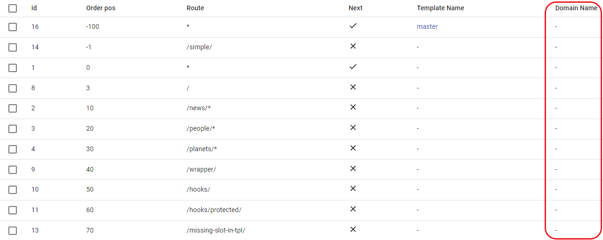
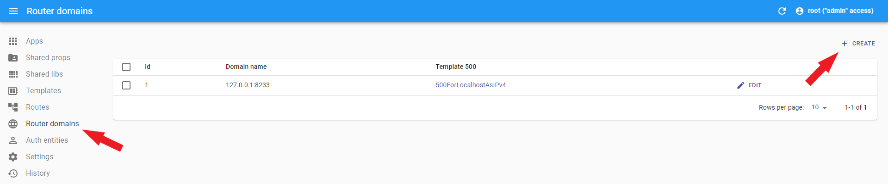
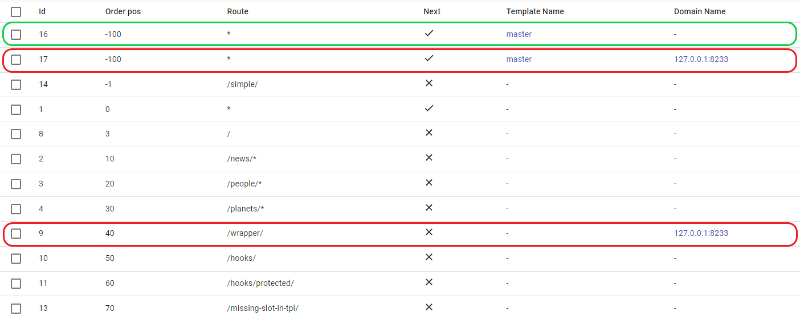
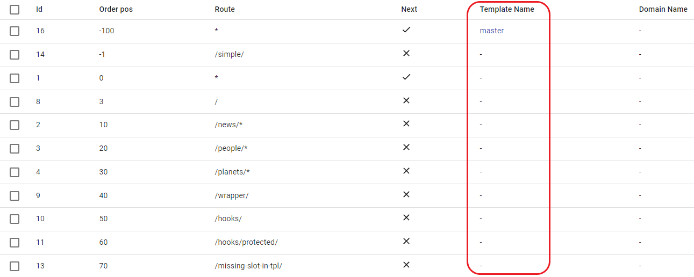
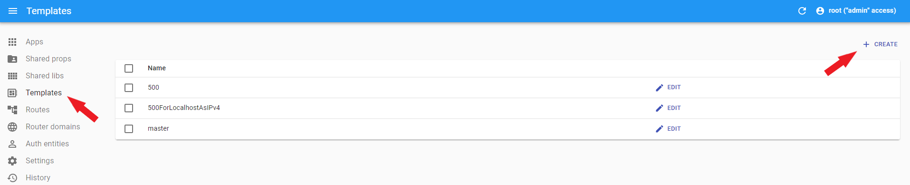
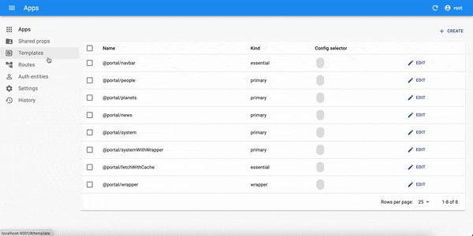
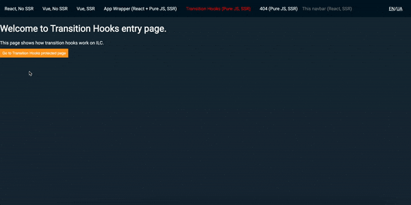
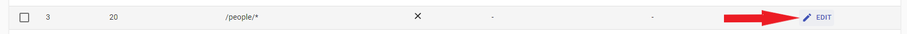
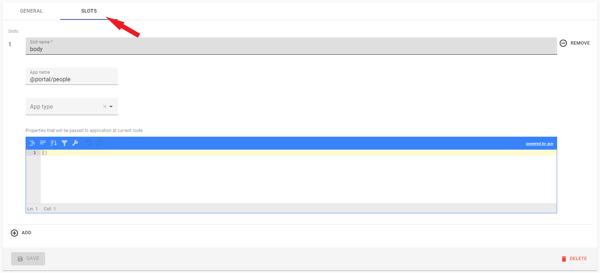

Route configuration⚓︎
Route domains⚓︎
ILC can handle requests from multiple domains, so you can use a single ILC instance to handle them instead of rolling out individual instances for every domain.
ILC checks the exact match of domain names. It means that secure.example.com is not equal to example.com, and you may need to add the necessary subdomains to handle this case properly.

- Domain name must be without protocol.
- Empty
Domain Namefield means the main app domain. -
To add a new domain, go to the Router domains section in the sidebar.
Add a new domain

ILC renders applications for only one domain at the same time. To add one header to several domains, you need to create the same route several times specifying the required domain for each route.
For example:

where:
- - render for the main domain
- - render for the
127.0.0.1domain only
More information about domains is available in the Multi-domains page.
Route template⚓︎
Template is an HTML file that is used to build the structure of your page. If it is missing in the routing chain, ILC won't be able to render your content properly and will throw an error.

Important note
There must be at least one template in the routing chain.
Create a template
To create a template, go to the Templates section in the sidebar.

Route metadata⚓︎
The Metadata field is handled by plugins, not by ILC. For example, ILC has the Transition hooks plugin installed by default. This plugin determines whether the page should be protected. If yes, it will grant access to the protected page only after the user fulfills the required conditions.
ILC also supports custom plugins. You can learn more about them in the ilc-plugins-sdk repository
Supported options⚓︎
-
protected. Type:boolean
Access the protected page⚓︎
In the basic scenario, the required condition to access the protected page is to press the confirm button. In real world scenarios, you can set any conditions (for example, authorization form).

More information about the Transition hooks plugin is available in the ILC transition hooks page.
Slot configuration⚓︎
Slot configuration defines the main settings of a route:
- Application.
- Where the application should be displayed.
- How critical the application is for the site.
- Create/change application properties.


If you want to render a page as plain HTML, leave the slot properties empty and ensure that the current route uses the HTML template with no ilc-slot tags.
Configuration⚓︎
-
Slot name
Slot name refers to the value of the
idattribute of the correspondingilc-slotin the ILC templates. Your application will be rendered inside theilc-slotwith theidthat you specify in theSlot name.</head> <body> <ilc-slot id="navbar" /> <ilc-slot id="body" /> <ilc-slot id="footer" /> </body> </html>Important note
You can have only one application per slot. If you add multiple applications to one slot, only the latter one will be rendered.
-
App name
App name refers to the application that will be rendered in the specified slot. Applications in the list are defined in the
Appssection in the sidebar. -
App type
There are the following app types:
- Primary: set for the vital applications of your site. If the application crashes on the server side, ILC won't render it on the client side, and will immediately render an error.
- Essential: set for the vital applications for the user (for example, header). If the application crashes on the server side, ILC will try to render it on the client side. It will render an error only if the application crashes on both server and client sides.
- Regular: set for non-critical applications (for example, footer). If the application crashes on both server and client sides, ILC won't render it on the client side and will ignore errors from it.
-
Props field
Props allow you to configure the application separately for each route. With props, you can override the props specified when creating the application in the Apps section in the sidebar.